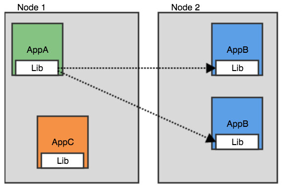
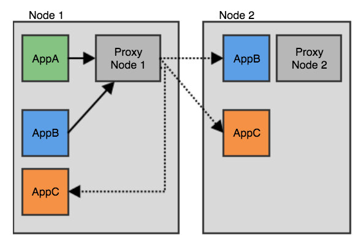
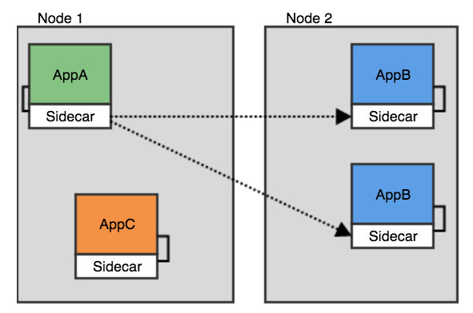

本文为翻译文章，点击查看原文。
注：这是介绍服务网格的软件架构方面系列的第二篇文章。要了解更多，请查看服务网格之路。
如果你正在围绕微服务构建软件和团队，并且在寻找更快、更灵活的迭代方法。Service Mesh可以在保持（或增强）系统可观察性和控制方面带来帮助。这篇博文中，我将讨论Service Mesh是什么，以及在选择和部署Service Mesh时需要考虑的因素。
那么，什么是Service Mesh？它与现有的架构有什么不同？Service Mesh是运行在请求/响应上层的通信层，对于构建微服务有以下几点帮助：
- 不对安全边界做出假设的零信任安全原则。
- 跟踪微服务间的通讯。
- 故障注入和容错，可以让您通过实验验证应用的弹性。
- 高级的服务路由可以做到如A/B测试、快速版本控制和部署以及流量复制。
为什么又发明一个新术语？
看了上面那个列表，你可能会想“如果没有Service Mesh，我照样可以做到这一切”，你是对的。 滑动窗口协议或请求框架也是这个逻辑。 但是，一旦有符合需求的新兴标准出现，那么使用该标准比自己实现会更有效。 Service Mesh是微服务模式的新的层面。
Service Mesh仍处于初期阶段，尚未出现成文标准，但是已经有一些最佳实践积累了足够的经验使标准变得清晰。 随着前沿领导者的尝试实践，对最佳实践记录的比较和提炼通常会很有用。 我们已经看到Kubernetes成为生产环境中运行Web应用程序容器的标准方法。 标准是在紧急非强迫下产生的：如将通用API、协议和概念在适当的时机达成一致是一门艺术。
回顾一下计算机网络的发展史。在分组交换网络的出现后，我们发现许多人尝试通过虚拟路由，使用握手、重传和因特网将一堆数据包转换为有序的字节流。出于互操作性和简单性的考虑，又出现了“最佳实践”流数据包：TCP（RFC675的引入很好地解释了这层上的内容）。当然还有其他选择，比如我在空间网络中使用了Licklider传输协议，其中的分布式拥塞控制既没必要也不高效。再比如您的浏览器可能已在使用QUIC。然而，对TCP的标准化使得一代程序员摆脱了滑动窗口，重试和拥塞崩溃的实现（除了实现它的那些包头之外）。
接着，我们发现许多请求/响应在TCP协议之上运行。其中许多最终迁移到HTTP（或HTTP/2或gRPC）。如果您可以将通信分解为“方法、元数据、正文”，那么您应该了解下类似HTTP协议如何管理框架，如何从正文中分离元数据，如何解决线头阻塞（HOL）问题。HTTP协议不仅仅用于基于浏览器的应用程序，还有像Mongo这样的数据库也提供HTTP接口，无处不在的HTTP催生了大量的工具和解放了开发人员的学习负担。
微服务的通信模式中的 API 和相关实现形成了新的通信层；而Service Mesh可以视作这些新要素的集大成者。
通讯层的实现方式，有以下选择：
- 用库的形式在微服务应用程序中导入使用。
- 用节点代理或守护程序的形式为特定节点/计算机上的所有容器提供服务。
- 用Sidecar容器的形式运行，和应用容器一同运行。
库
软件中库引用的方式是个很自然的选择。它简单明了。在这种架构中，每个微服务应用程序包中都有实现Service Mesh功能的库。像Hystrix和Ribbon就是用库的方法。

如果一个团队仅使用一种语言开发并且还负责一个应用的运行，那么使用库引用就很容易，这种方式自然也是很合适的。库方法不需要与底层基础架构进行太多合作，如Kubernetes无需关心正在运行的一个应用是否包含Hystrix库。
要实现多语言支持，就必须用不同语言去重复实现多次，挑战在于实现的复杂性和一遍又一遍去实现同样概念的工作量。
我们的用户中对库模型的使用非常有限，因为大多数用户都会用许多不同语言编写应用程序，还会运行一些不是自己编写的应用程序，因此库引用是不可行的。
这种模型在工作审计方面具有优势：库的代码是在微服务内运行的。信任边界也很小，您只需要信任在自己进程中调用的库，而不像调用在网络的某个地方的远程服务。库的代码具有和库所在的微服务一样多的特权。代码的执行也是在微服务的环境中执行的，因此CPU时间片或内存等资源的分配可以很公平的由操作系统去完成。
节点代理
节点代理模型是下一个替代方案。在此架构中，每个节点上都运行一个单独的代理（通常是用户进程），为异构的服务提供负载。相比之下，该模型与库模型相反：它不关心应用程序的语言，可以为许多不同的微服务租户提供服务。
Linkerd在Kubernetes上的推荐部署就是这样的。和应用服务代理（ASP）F5一样，和Kubernetes默认的kube-proxy代理一样。
由于每个节点上都需要一个节点代理，因此需要与基础架构进行一些协作，如果没有协作的话此模型就无法工作。通过类比，大多数应用程序会把选择TCP堆栈，猜一个端口号，然后发送或接收TCP数据包的事委托给基础设施（也就是操作系统）。

相比工作审计来说，这个模型强调工作资源共享，如果节点代理用一些内存来缓存微服务的数据，那么服务就可能会在几秒钟内转向并使用该缓存区提供的数据。这可能非常有效，但容易被滥用。如果我的微服务请求所有缓存区空间，节点代理要先为你的微服务在缓存区提供一个快照。您需要更多代码来管理每个共享资源。
配置信息也受益于共享模式。因为将一个配置副本分发到每个节点，比把每个节点上的一个配置副本分发到每个节点要高效的多。
微服务容器化依赖的许多功能由节点代理或等效的组件提供。就像kubelet初始化pod，以及像flanneld这种CNI守护进程，或者再发散下，甚至操作系统内核本身就像节点代理模型一样。
Sidecar
Sidecar是社区的新生儿。这是Istio与Envoy使用的模型。 Conduit也使用了sidecar方法。在Sidecar部署方式中，你会为每个应用的容器部署一个伴生容器。对于Service Mesh，Sidecar接管进出应用程序容器的所有网络流量。
我到目前为止的讨论，这种方法介于库和节点代理模型之间。例如，您部署Sidecar服务网格时，无需在节点上运行代理（因此您不需要基础结构的协作），但是您将运行多个相同sidecar的副本。另外一个角度看：我可以为一组微服务安装一个Service Mesh，你也可以安装一个有特定实现的Service Mesh，我们不需要沟通协调。这在服务网格的早期是非常强大的，我们可能会共享同一个Kubernetes集群但用途不同，我们会用到不同的功能集，或者在可靠技术实现的基础上兼容前沿技术的尝试。
Sidecar有利于工作审计，特别是在一些与安全相关的方面。例如：假设我使用Service Mesh来提供零信任模式的安全性。我希望Service Mesh以加密方式去验证客户端和服务器。如果使用节点代理来实现：当我的pod想成为另一个服务器pod的客户端时，节点代理将代表我的pod进行身份验证。节点代理也在服务其他pod，因此必须确保另一个pod不能代表我的pod进行身份验证去欺骗他。如果我们用Sidecar来实现，我pod的Sidecar不会服务于其他pod。我们可以遵循最小特权原则，并在认证密钥，内存和网络功能方面满足这个pod最低限度的需求。

因此，从外部看，Sidecar与其附属的应用程序具有相同的权限。另一方面，sidecar需要介入应用程序和外部服务之间。这会产生一些安全顾虑：你即希望sidecar拥有尽可能少的权限，但你又需要给它足够的权限来控制进出应用程序的流量。例如，在Istio中，负责设置Sidecar的init容器要具有设置iptables规则NET_ADMIN权限。初始化方式是较好的安全实践，它用最少的权限运行后就消失，但NET_ADMIN的所有内容都代表了被攻击的点。 （已经有人在加强改进这一点）。
从安全角度来看，Sidecar和应用程序非常近。但没有在函数中调用（如库）那么近，但比调用节点代理更近。在Kubernetes中使用Istio时，您的应用容器通过pod中共享的网络命名空间内的loopback接口与Sidecar通讯，这对其他pod和节点代理是不可见的。
大多数Kubernetes集群每个节点上有多个pod（因此每个节点有多个sidecar）。如果每个sidecar都需要知道“整个配置”，那么你就需要更多的带宽来同步该配置（以及更多的内存来存储配置副本）。因此，你不得不给每个Sidecar的配置范围加以限制，这很强，但从另一个角度看：必须花费更多精力为每个Sidecar减少配置（如Istio中的Pilot）。
另一方面是通过Sidecar复制其他东西会带来类似的开销。好消息是如果复制的内容完全相同并且使用了正确的驱动，容器运行时就会容器重用镜像一样，因此磁盘损失就不重要了，并且代码块也会在内存中共享。但是每个Sidecar都是独一无二的，要避免在每个Sidecar上做一堆复制而使得Sidecar变重。
使用Sidecar的Service Mesh在功能完整性和轻量级之间找到了良好的平衡。
节点代理或Sidecar模型会占上风吗？
我想你可能会看到两者都存在。现在看来似乎Sidecar是Service Mesh的最佳实践：新技术、快速迭代和逐步替换。随着Service Mesh的成熟，我们将看到更多节点代理模型的应用。
随着Service Mesh实现的成熟和集群变得越来越大，节点代理模型的优势会更重要：
- 通过节点共享开销（尤其是内存）
- 更少、更容易扩展和分发配置信息
- 精心构建的节点代理可以有效地把服务一个应用程序的资源转移给另一个应用
Sidecar是一种向应用程序提供服务（如高级通信代理和服务网格）的方法。它特别适用于容器和Kubernetes。它的最大优势包括：
- 不需要中央协调，可以逐步的添加到现有集群
- 为应用程序做的工作就属于该应用程序
- App-to-sidecar通信比app-to-agent更安全
下一步是什么？
正如Shawn在他的帖子中谈到的那样，我们一直在考虑微服务如何在几年内改变网络基础设施的要求。Istio的支持和增长向我们证明，有一个社区准备开发和制定规范，并且会有一个良好的架构实现。
Istio正在推进最先进的微服务通信，我们很高兴能使该技术更易于操作、可靠且适合您的团队在私有云、公共云或混合中的工作。